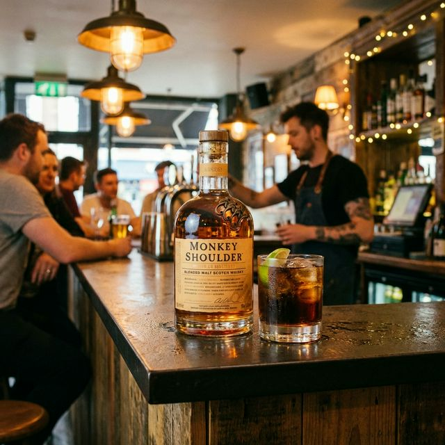

邪道？いいえ正解です。モンキーショルダーを「コーラで割る」のが世界で最もクールな飲み方である理由
「ウイスキーをコーラで割るなんて、もったいない！」
そんな古臭いことを言う人がいたら、このボトルを見せてあげてください。
モンキーショルダー。ボトルの肩に3匹の猿が乗ったこのウイスキーは、そもそも「カクテルにして遊ぶため」に作られました。
スコットランドの作り手たちが、「ウイスキーはもっと自由でいいんだよ！」と叫んでいるような1本です。

混ぜるために生まれた「ブレンデッドモルト」
モンキーショルダーは、3つの蒸留所のモルト原酒だけをブレンドしています。
あえて個性をぶつけ合わせることで、「何と混ぜても負けない芯の強さ」と「フルーティーでキャッチーな香り」を両立させました。
だから、コーラやジンジャーエールのような味の強いドリンクで割っても、ウイスキーの美味しさがちゃんと残るのです。
おすすめの「罪なき割り方」3選
1. モンキー・コーラ（Monkey Coke）
- レシピ: モンキーショルダー 1 : コーラ 3
- 味: バニラアイスを乗せたコーラフロートのような味わい。ジャンクフードやピザとの相性が最高です。レモンを絞るとさらにGood。
2. ジンジャー・モンキー（Ginger Monkey）
- レシピ: モンキーショルダー 1 : ジンジャーエール 3 + オレンジスライス
- 味: 公式が激推しする飲み方。スパイシーさとオレンジの香りが混ざり合い、これだけでお洒落なBarのカクテルになります。
3. モンキー・スプラッシュ
- レシピ: モンキーショルダー 1 : サイダー（三ツ矢サイダーなど） 3
- 味: 駄菓子屋のような懐かしさと、本格ウイスキーのリッチさが同居する不思議な体験。
ウイスキーは「自由」だ
ストレートで眉間にしわを寄せて飲む必要はありません。
好きなジュースで割って、氷をガラガラ言わせて、仲間とワイワイ飲む。
それが、モンキーショルダーが教えてくれる「世界で一番クールなスタイル」です。